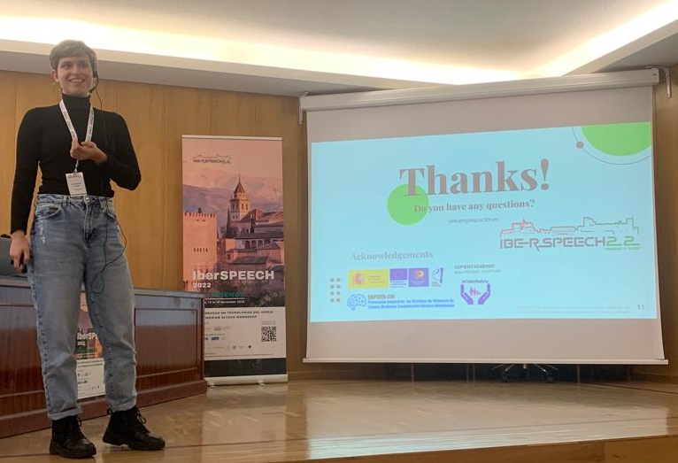
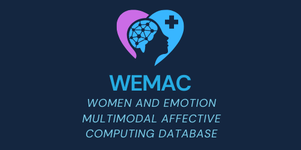
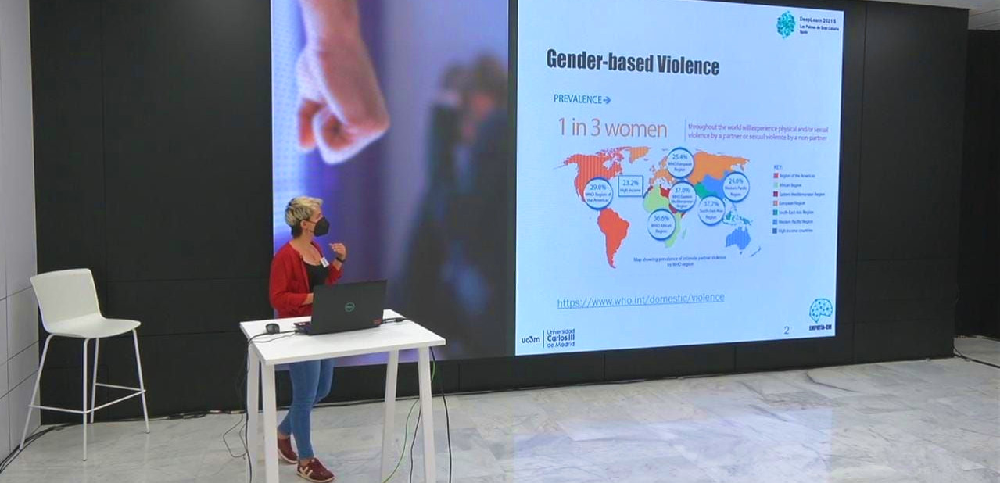
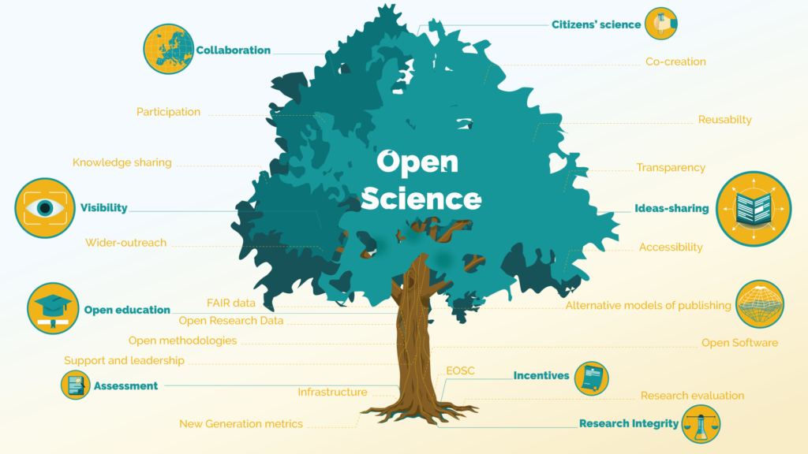
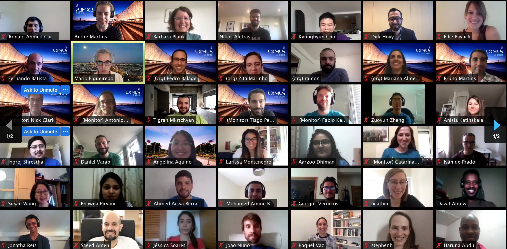
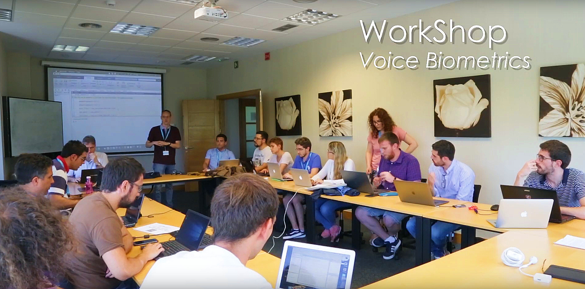
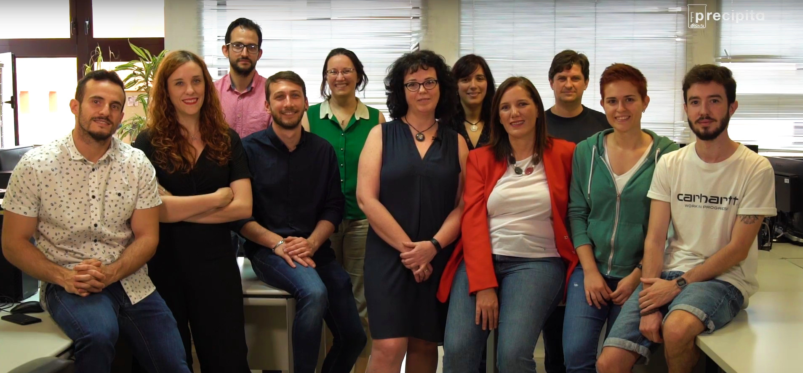

IberSPEECH Conference 2022
[November 2022] : It was a pleasure to meet again onsite with researchers from the Speech field. Thanks everyone who put effort to make this possible! Our presented works are available in the following links:

[November 2022] : It was a pleasure to meet again onsite with researchers from the Speech field. Thanks everyone who put effort to make this possible! Our presented works are available in the following links:

[August 2022] : The team is proud to present the first release of the open access WEMAC Database. A multimodal women data emotions database captured to help the research on detection of gender-based violence situations. We release this database with the aim of sharing it with the research community, encouraging the improvement of the baseline results and advancing in the research of multi-modal emotion analysis in general and, in gender-based equality, in particular. The code is available in the button below!

[September 2021] : I had the pleasure to visit the Chair of Embedded Intelligence for Healthcare and Wellbeing in Augsburg Universität (Germany) for 5 months and work with this great research team, under the supervision of Prof. Dr.-Ing. habil. Björn Schuller.

[July 2021] : I had the opportunity to present part of my PhD Thesis work titled "Multimodal Affective Computing In Wearable Devices With Applications In The Detection of Gender-Based Violence" in DeepLearn2021 Summer School in Las Palmas de Gran Canaria.

[May 2021] : I've attended the course "UC3M Ticket for Open Science" for Early Career Researchers and PhD candidates and discovered the advantages of Open Science. Here is a blog post everything I've learnt on the course!

[July 2020] : I had the pleasure to assist to the LxMLS 2020 Online, where I gained deeper understanding of fields of NLP and Computational Linguistics, Statistics and Machine Learning.

[July 2019] : I had the opportunity to be part of the RTTH Summer School on Speech Technologies held in Vicomtech, San Sebastian, Spain.

[April 2019] : I joined the UC3M4Safety Team to develop ‘BINDI’, a wearable solution for detecting, preventing and combating violence against Women with Artifical Intelligence.